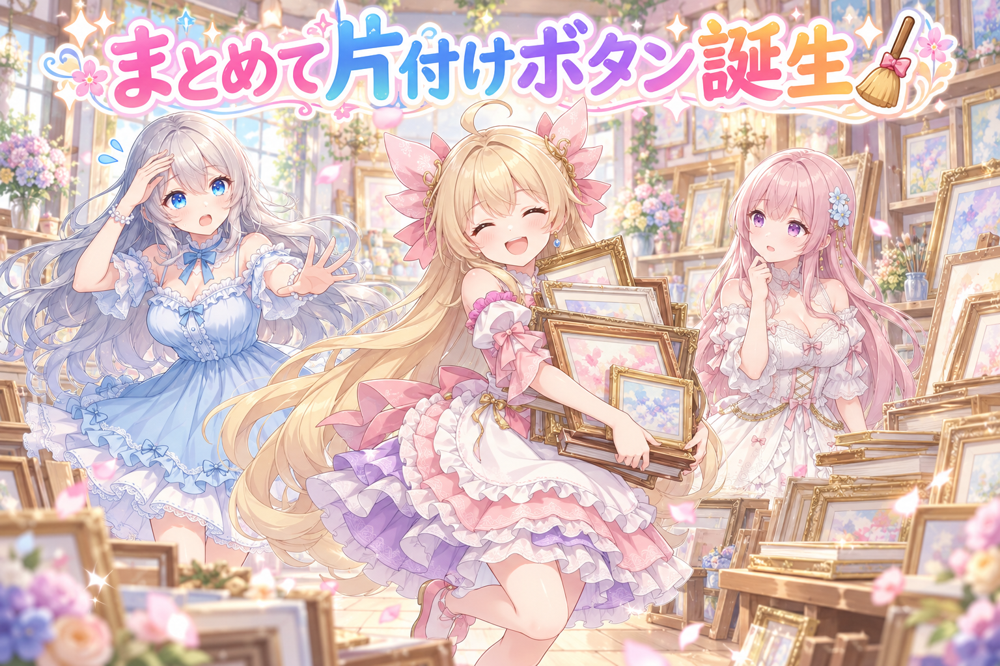
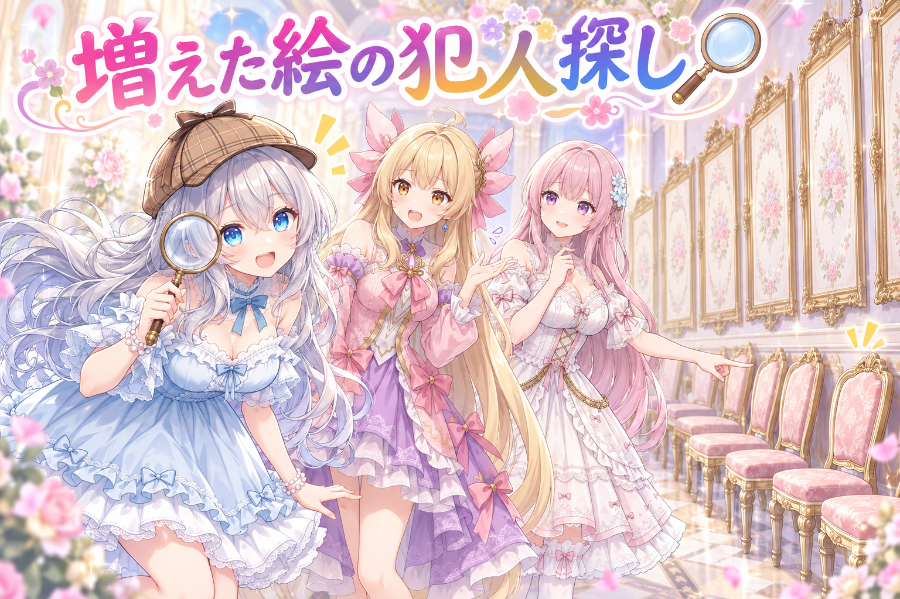
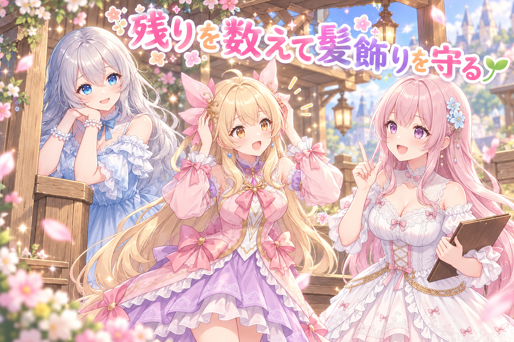
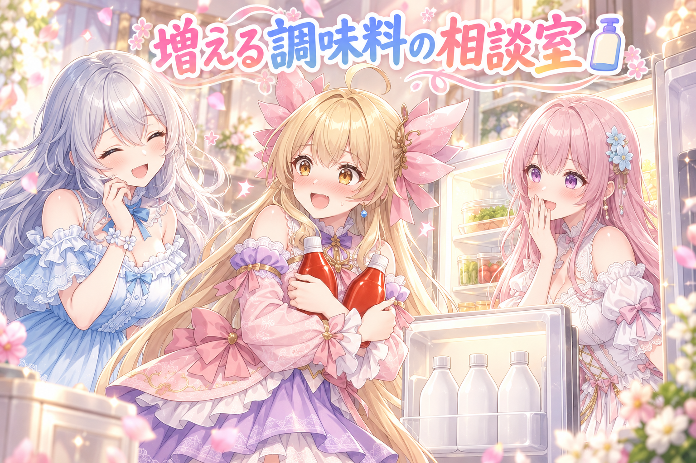

📌 3行まとめ
- レビューアプリに「返信を作る」ボタンと、「出荷しない」にした画像をまとめて片付けるボタンを追加。出荷しない時は、ギャラリーや投稿用の棚に入れるかをYES/NOで確認する形に
- イベント画像がレビューに同じ絵で何枚も並んでいた問題を、枠の番号を振り直さない形に直して根っこから止めた。別のAIによる意地悪レビューを3周して取りこぼしも修正
- SNSのフォロー候補を「前日の残り＋新規でいつもの人数」に揃えるよう変更し、アイリスの髪飾りが描かれているかを確かめる関所も追加
ルピナス （笑顔）
はーい、今日もAIBSの時間がやってきました。お相手は長女のルピナスです。前回は指が6本の絵と3回戦ったけど、あのブログの絵、今日ようやくOKが出て無事に完成しました。
アイリス （大笑い）
3回目でやっと5本指になったやつね！あたしあれから、自分の指を数えるクセがついちゃったもん。
フィオナ （ふつう）
今日は、レビューアプリに新しいボタンが増えたお話と、同じ絵が何枚も並んでしまった謎の解決編です。
ルピナス （ウインク）
それと、明け方まで作業が続いた日でもあるから、そこも最後にちゃんと振り返ろうね。
1. 🧹 レビューアプリに「まとめて片付け」ボタンが増えた

レビューアプリは、作った画像や投稿文をスマホやPCで確認して「出す／出さない」を決めるための自作ツールです。これまで、SNSに届いたお返事への返信案は毎朝の自動処理の中でしか作られませんでした。そこで、出荷一覧などと同じボタンの列に「返信を作る」ボタンを追加し、押したタイミングで各SNSの返信を全部確認して、返信案をレビューに置けるようにしました。
もうひとつは「出荷しない」ボタン。これまでは画像1枚ごとに送信していたので、押した時は印だけ付けておき、まとめて片付けるボタンでAIに一括で処理してもらう形に変えました。さらに、出荷しない理由は「締め切りが過ぎただけ」の場合と「絵が崩れている」場合があるので、押すと「ギャラリーや投稿用の棚には入れますか？」とYES/NOで確認し、NOなら「どこにも入れない」という印が付くようにしています。
ルピナス （ふつう）
ではコントです。私が店長、アイリスが今日入った新人の『出荷しない』ボタン役ね。
アイリス （ドヤ顔）
いらっしゃいませー！出荷しないボタンです！押された絵は、その場で1枚ずつ全力で運びます！
フィオナ （考え中）
あの……たくさん押されたら、その数だけ往復するんですか？
ルピナス （呆れ）
鍛えなくていいの。今日からは、押された時は印を付けるだけ。最後にまとめて運ぶ方式です。
アイリス （びっくり）
えっ、じゃあ押された瞬間のあたし、ヒマじゃん。
フィオナ （ふつう）
ひとつだけお仕事があります。『この絵、ギャラリーや投稿用の棚には入れますか？』ってお客さんに聞くんです。
アイリス （考え中）
なんで聞くの？出荷しないって言われたんだから、棚にしまえばいいじゃん。
ルピナス （ふつう）
出荷しない理由が二種類あるからよ。締め切りが過ぎただけの元気な絵と……指が6本の絵。
アイリス （衝撃）
6本の子を棚に並べたら、前回の悪夢が展示されちゃう！
フィオナ （笑顔）
はい。なので『いいえ』を選ぶと、ギャラリーにも投稿用の棚にも入れない印が付くんです。
アイリス （笑顔）
なるほど！はい次のお客さん……あ、同期の『返信を作る』ボタンくんだ。
ルピナス （笑顔）
今までは朝しか動けなかった子ね。今日からは押せばいつでも、各SNSのお返事を全部見て、返信案をレビューに置いてくれるの。
アイリス （大笑い）
いつでも呼び出し可能！？ブラックじゃん！
フィオナ （呆れ）
ボタンなので……押された時だけ働く、とてもホワイトな子ですよ。
ルピナス （大笑い）
呼ばれるまで待てる分、アイリスより勤務態度はいいかもね。
アイリス （怒り）
ボタンに負けた！？……もうあたしもまとめて片付けてほしい。
📝 ポイント（初心者向け解説・技術メモ・まとめ）
- 初心者向け解説：お皿を1枚ずつ台所へ運ぶより、流しにためてまとめて洗う方がラクですよね🍽️ しかも「割れたお皿は捨てる？飾る？」を置く瞬間に決めておけば、洗う時に迷いません。
- 技術メモ：UI側では状態（出荷しない＋格納する/しない）の記録だけを行い、実処理はまとめボタンで一括実行するマーク＆スイープ型にした。定時バッチの一工程（返信案の作成）を手動トリガーとして切り出すと、処理内容は同じまま発火タイミングだけ自由になる。後で取り消しにくい分岐はconfirmダイアログでYES/NOを明示的に取る。
- ひとことまとめ：押した瞬間は印だけ、片付けはまとめて。
2. 👀 今日のやらかし

9/29のイベント画像をレビューしようとしたら、同じ絵が何枚も並んでいました。たどっていくと、画像を置く場所には番号付きの「枠」があり、別サイト向けの枠の番号を振り直したことで後ろの番号が玉突きでずれ、名前だけ変わった同じ絵を仕組みが「新しい絵」と思い込んで、別名のコピーを作っていたのが原因でした。
直し方は、他サイトの枠番号をもう振り直さないこと、置き直しで番号だけ変わった同じ枠は名前を付け替えて引き継ぐこと、そして「出荷しない」の印がずれた拍子に置き去りになったりコピーに乗り移ったりしないよう守ることです。直したあとは別のAIに意地悪な目でコードを読んでもらい、3周目の指摘まで直しました。
アイリス （びっくり）
お姉ちゃん大変！レビューに同じ絵がいっぱい並んでる！分身の術！？
ルピナス （びっくり）
落ち着いて、アイリス。これは……事件ね。犯人は、この中にいます。
アイリス （呆れ）
探偵モード入った。前回もGPUの犯人探ししてたよね？
ルピナス （笑顔）
犯人探しは長女のたしなみです。フィオナ、現場の状況を。
フィオナ （考え中）
はい。絵を置く場所には番号付きの枠があるんですが、別のサイト向けの枠の番号を振り直したら、後ろの番号が全部ひとつずつずれてしまったんです。
アイリス （考え中）
椅子取りゲームで途中の人が抜けて、後ろの人が全員ひとつずつ詰めて座った感じ？
フィオナ （笑顔）
まさにそれです。しかも名札が変わった絵を、仕組みが「新しいお客さんだ」と勘違いして、別名でもう一枚コピーしてしまって。
ルピナス （びっくり）
つまり犯人は……よかれと思って番号を詰めてあげた、優しさ！
ルピナス （ふつう）
じゃあ再発防止ね。他のサイトの枠番号はもう振り直さない。置き直しで番号だけ変わった同じ枠は、名前を付け替えてそのまま使う。
フィオナ （ふつう）
さっきの「出荷しない」の印も、ずれた時に置き去りになったり、コピーのほうに乗り移ったりしないよう守りました。
アイリス （笑顔）
完璧じゃん！はい事件解決、撤収〜！
フィオナ （しょんぼり）
……と思ったんですけど、意地悪な目で読むレビュー役のAIさんに見せたら、しっかり指摘が返ってきまして。
フィオナ （泣き）
3周目でもまだ、改名の取り違えと、途中で止まってしまうところと、投稿用フォルダ側の写しの問題が見つかりました……。
ルピナス （呆れ）
うまくいきかけてから、もう一回出てくるのが本番なんだよね。
アイリス （にやり）
探偵さん、犯人ひとりじゃなかったじゃん。
ルピナス （大笑い）
……共犯者も全員確保しました、ということで。
アイリス （ふつう）
でも最後の確認、明け方だったよね。探偵さん、寝てないでしょ。
ルピナス （しょんぼり）
そこは褒めるところじゃないんだよね。今日はお水を飲んで、ちゃんと寝る。これも再発防止です。
📝 ポイント（初心者向け解説・技術メモ・まとめ）
- 初心者向け解説：椅子取りゲームで途中の人が抜けると、後ろの全員がひとつずつ詰めて座り、名札と顔が合わなくなってしまいます🪑 座席番号は一度決めたら動かさないのが平和です。
- 技術メモ：ファイル名に連番を含む運用で再採番（renumber）するとリネームが連鎖し、差分検知が「新規ファイル」と誤認して重複コピーが生まれる。対策は①採番を固定する②同一枠の番号変化はrenameとして引き継ぐ（adopt）③付随する状態フラグもrename時に一緒に移す。修正後は別コンテキストのAIに敵対的レビューを複数周させると、取り違え・中断時の不整合・写し側の漏れといった端のケースが見つかりやすい。
- ひとことまとめ：番号は振り直さない、ずれたら改名で引き継ぐ。
3. 🌱 フォロー候補の数合わせと、髪飾りの関所

あるSNSでは、1アカウントが1日にフォローできるのは20人ほどまで。見送る人も出るので、レビューアプリには20人台半ばの候補を置いています。ただ、それだと翌朝まで数人残ってしまうことがあり、翌朝また同じ人数を足すと列がどんどん伸びてしまいます。そこで、次の朝の処理からは「残っている候補＋新しい候補」でいつもの人数になるよう、足す数を調整する形に直しました。
あわせて、画像のストックに入る前に、アイリスの髪飾りがちゃんと描かれているかを確かめる関所も追加しています。
フィオナ （笑顔）
クイズの時間です。1日にフォローできるのは20人ほど、見送りも考えて候補は20人台半ば。前の日の候補が少し残っていたら、次の朝は何人足すのが正解でしょう？
アイリス （大笑い）
残りと合わせて倍！勢いが大事！
ルピナス （呆れ）
アイリス、並んで待つ人が増えるだけよ。
アイリス （考え中）
じゃあ残ってる子は忘れて、新しく20人台半ば！
フィオナ （しょんぼり）
そうすると、前の日の方々がずっと列の後ろで待ちぼうけに……。
ルピナス （ふつう）
正解は、残っている人数を数えて、新しい子と合わせていつもの人数になるように足す、です。
アイリス （びっくり）
足し算じゃなくて引き算してから足すんだ！算数の授業じゃん。
フィオナ （ふつう）
はい、次の朝からはそう動くように直しました。では第2問。ストックに入る前の絵を見張る、新しい関所ができました。何を見ているでしょう？
フィオナ （ウインク）
正解は……アイリスちゃんの髪飾りです。
フィオナ （ふつう）
髪飾りが抜けた絵がストックに紛れ込まないように、付いているのを確かめてから通すんです。
アイリス （照れ）
……髪飾りなしのあたしって、そんなに別人なの？
ルピナス （笑顔）
別人じゃないけど、アイリスらしさの大事な目印だからね。関所に守られてるんだよね。
アイリス （笑顔）
VIP待遇だ！よーし、関所の常連になる！
フィオナ （大笑い）
常連さんより、毎回すんなり通れるのが一番なんですけどね。
📝 ポイント（初心者向け解説・技術メモ・まとめ）
- 初心者向け解説：おやつの補充は、お皿に残っている分を数えてから足すとあふれません🍪 見張り番に「この子の目印はこれ」と教えておけば、似ていても違う子を通さずに済みます。
- 技術メモ：日次上限のある操作の候補キューは、毎回固定数を追加するのではなく「目標数 − 未処理残数」だけ補充する。生成画像をプールへ入れる前に、キャラ固有パーツ（髪飾りなど）の有無を確認するゲートを置くと、崩れを後工程に流さずに止められる。
- ひとことまとめ：足す前に残りを数える、通す前に目印を見る。
4. 🎁 お楽しみコーナー：三姉妹の相談室

ルピナス （ふつう）
今日のお悩みはこちら。『冷蔵庫を開けたら、同じマヨネーズが3本ありました。買い物のたびに、切れてた気がして買ってしまいます』
アイリス （大笑い）
今日のレビューアプリと同じ病気だ！分身の術！
フィオナ （考え中）
私のおすすめは、お買い物の前に冷蔵庫の中を写真に撮っておくことです。売り場で見返せば迷いません。
アイリス （笑顔）
あたしは逆！3本あるなら、マヨ祭りを開催して一気に使い切る！
ルピナス （呆れ）
祭りのあとに、4本目を買いに走る未来が見えるわ。
ルピナス （ふつう）
私からは、開けてる1本だけを一番手前に置いて、予備は奥にまとめる、かな。手前の1本が空いたら、それが買う合図。
フィオナ （笑顔）
関所方式ですね。手前の1本が門番なんですね。
アイリス （考え中）
写真と、門番と、祭り……全部やったら最強じゃない？
ルピナス （笑顔）
全部やるなら、祭りは一番最後ね。
アイリス （照れ）
……実はあたしも、昨日ケチャップ買って帰ったら、冷蔵庫に2本あった。
フィオナ （びっくり）
アイリスちゃん、相談を受ける側じゃなくて、する側でしたか。
ルピナス （大笑い）
まずは自分の冷蔵庫の写真からね。
みんなの家の冷蔵庫で、気づいたら増えてる調味料ってある？ 増殖の止め方を知ってる人も、ぜひコメントで教えてね！
5. 💐 今日のまとめ
- 「押した瞬間は印だけ、処理はまとめて」にすると、1枚ずつの手間も押し間違いの不安も減る
- 連番の振り直しは玉突きのもと。一度決めた番号は動かさず、ずれたら改名で引き継ぐ
- 上限のある作業は「残り＋補充＝いつもの数」で列を伸ばさない
- 明け方まで作業した日は、お水と睡眠がいちばんの再発防止
みんなは、作業用のツールにボタンを増やすとき、どんなふうに並べてる？
💬 コメント
お名前とコメントだけで送れるよ（承認されるとみんなに表示されます🌸）
コメントを読み込み中…